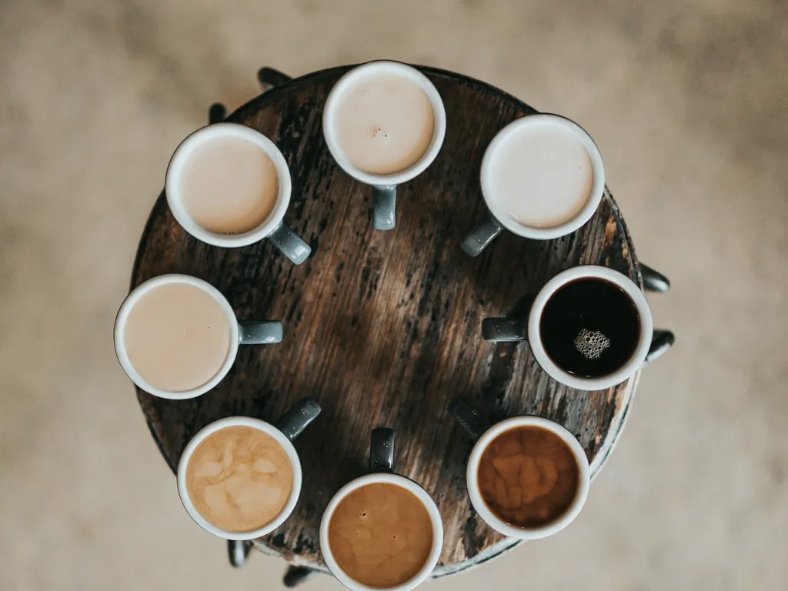
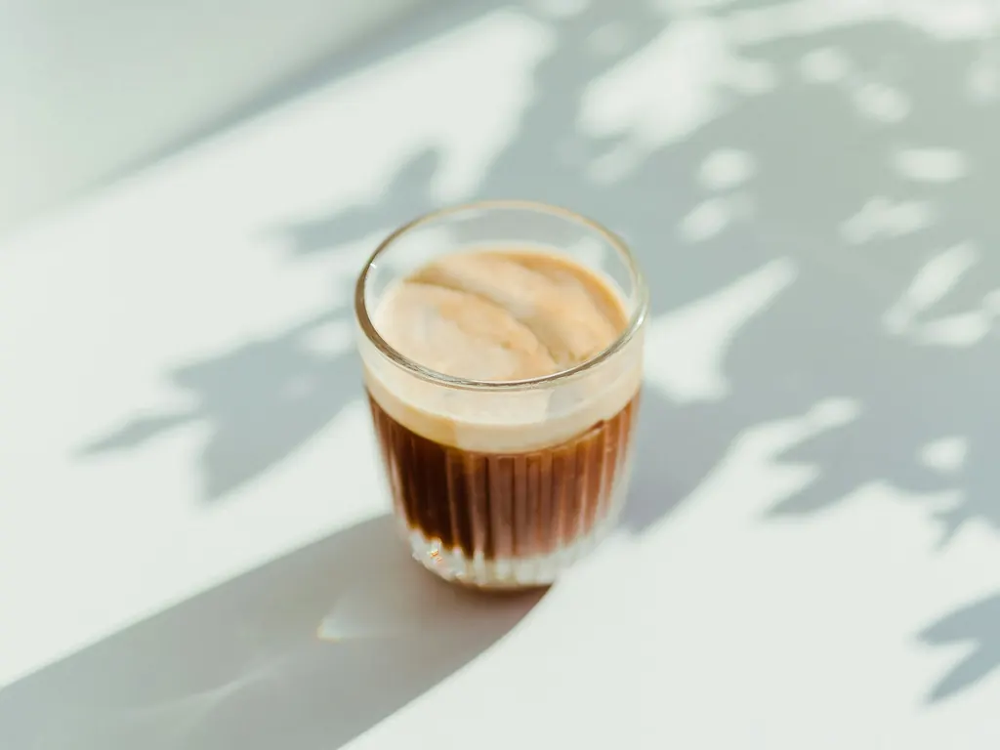

Abierto ahora
Nuestra carta
Café recién hecho, desayunos de los de verdad y bollería del día. Todo con su precio, sin sorpresas y con opciones con leche vegetal, veganas y sin gluten.
De la barra a tu mesa
Elige por lo que te apetezca hoy
Filtra por categoría o desplázate para verlo todo. Si dudas, pregunta en barra: te ayudamos a elegir.


Precios orientativos con IVA incluido. La carta puede variar según la temporada y lo recién hecho del día.
Recién horneado
La bollería y repostería del día
Cada mañana llenamos la vitrina de cosas ricas para acompañar el café. Esto es lo que más vuela.
Cada mañana
Croissants y bollería
Croissants, napolitanas y caracolas para empezar el día. Lo mejor, recién hechos a primera hora.
Para merendar
Dulces de la casa
Bizcochos, magdalenas y dulces sencillos, de los de toda la vida. Con opción sin gluten casi siempre.
Tarta del día
Tartas caseras
Una tarta distinta cada día, según la temporada. Pregunta por la de hoy o encárgala para tu celebración.

Para llevar
Tu café, contigo donde vayas
Preparamos cualquier café y desayuno de la carta para llevar, durante todo el horario. Sin coste extra y listo en un momento.
Es el favorito de quien madruga para subir al monte Larun, de los que cruzan a Francia y de quien va con prisa al trabajo. Pídelo en barra y sigue tu camino.
Dónde estamos
Para todos
Alérgenos, leches vegetales y opciones del día
Tenemos leche de avena, soja y almendra para cualquier café, sin coste extra. Cada día horneamos alguna opción vegana y, casi siempre, algo sin gluten.
Si tienes alguna alergia o intolerancia, dínoslo en barra: te informamos de los ingredientes de cada elaboración y te ayudamos a elegir con tranquilidad.
Pregúntanos lo que necesites
Sobre la carta
Preguntas frecuentes
¿Los precios incluyen IVA?
Sí. Todos los precios están indicados por unidad e incluyen IVA. Algunos productos, como la tarta del día o el zumo natural, cambian según la temporada, pero los precios se mantienen orientativos.
¿Se puede pedir café para llevar?
Sí. Preparamos cualquier café y desayuno de la carta para llevar, durante todo el horario. Es muy habitual entre quien sube al monte Larun o va de camino a la frontera con Francia.
¿Hacéis encargos para grupos o meriendas?
Sí. Para grupos, cumpleaños o meriendas podemos preparar bandejas de bollería y café. Llámanos al 948 62 56 73 con un día de antelación y lo organizamos.
¿Qué métodos de pago aceptáis?
Aceptamos efectivo, tarjeta (también contactless) y Bizum. Para pedidos de grupo grandes, podemos preparar un ticket único.
¿Tenéis opciones con leche vegetal, veganas o sin gluten?
Sí. Tenemos leche de avena, soja y almendra para cualquier café, sin coste extra, y cada día alguna opción vegana y, casi siempre, algo sin gluten. Pregunta en barra por las del día.
¿Se te ha abierto el apetito?
Acércate a Sara Kafetegia y pídelo en barra. Te lo preparamos al momento, aquí o para llevar.